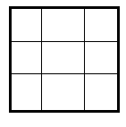
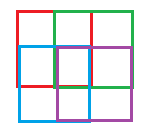

Function Approximation: How is tile coding different from highly discretized state space?
I'm transitioning from discretization of a continuous state space to function approximation. My action and state space(3D) are both continuous. My problem suffers majorly from errors due to aliasing and nearly no convergene after training for a long time. Also I just cannot figure out how to choose the right step size for discretization.
Reading Sutton & Barto helped me understand the power of tile coding i.e having the state space described by multiple offested tilings overlapping each other. Given a continuous query/state, it is discribed by N basis functions, each corresponding to a single block/square of the criss-cross tilings it belongs to.
1) How is the performance different from going for a highly discretized state space?
2) Can anyone please point me to a working example of tile coding in python? I am learning too many things at the same time and getting super confused! (Q learning, discretization dilemma, tile coding, function approximation and handling the problem itself)
There doesn't seem to be any exhaustive Python coding tutorials for continuous problems in RL.
Answer
As the Simon's comment describes, a key difference between a highly discretized state space and a function approximator using tile coding, it's the hability of tile coding to generalize the values learned from one state to other similar states (i.e., tiles can overlap). In the case of a highly discretized state space, you need to visit all (and they can be a lot) the states to obtain a good representation of the value function (or Q function).
Regarding the second question, in this link you can find an implementation of tile coding (in C, C++, Lisp and Python) written by Rich Sutton and other members of his laboratory.
Suggest
Adding to Pablo's answer -
Tile coding (as a special case of coarse coding) can be compared to simple state aggregation. A simple state aggregation is, for example, a grid. Tile coding would be a stack of grids on top of each other, each shifted a bit from the previous.
The benefits are two fold - it allows you to have better discrimination (more fine grained control, less bias) without loss of generalization (less variance).
This is because with tile coding you cover more states, with less features.
A grid is similar to one-hot-encoding. A 3x3 grid is equivalent to a 9-Dimension 1-hot-encoding vector - and covers 10 states in total - either an object is in one of the 9 grid blocks, or is in none of them.

So the middle point could be represented by (0,0,0,0,1,0,0,0,0).
How about you take 4 - 1x1 boxes, and just shift them a little bit 0.5 box (so that they cover 2x2 area of the grid each).

Now you cover 10 states with only 4 dimensions, or 4 inputs: red box, green box, blue box, and purple box.
Now the same middle point could be represented by (1,1,1,1).
This means you can generalize better. Before - gradient descent would only affect that middle point parameters. Now, since a point is influenced by a combination of few features - all of these features parameters will be affected. Which also allows for faster learning (as Pablo mentions).
Coursera offers (a paid) specialization which has exercises you need to implement in Python. Specifically Course 3 week 3 let's you work with tiles. They are using an updated (compared to Pablo's answer) Sutton's implementation of the code, which is more simplified and uses python 3. Since the code can be quite cryptic at first, here is my comments on it.